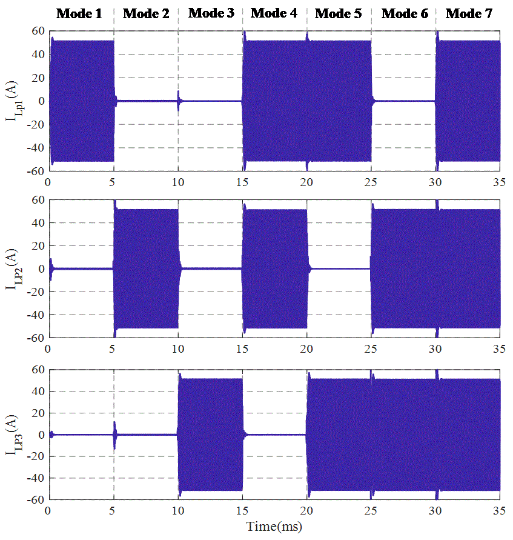
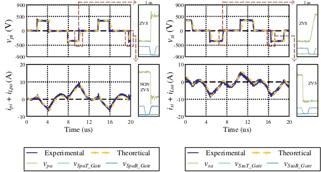
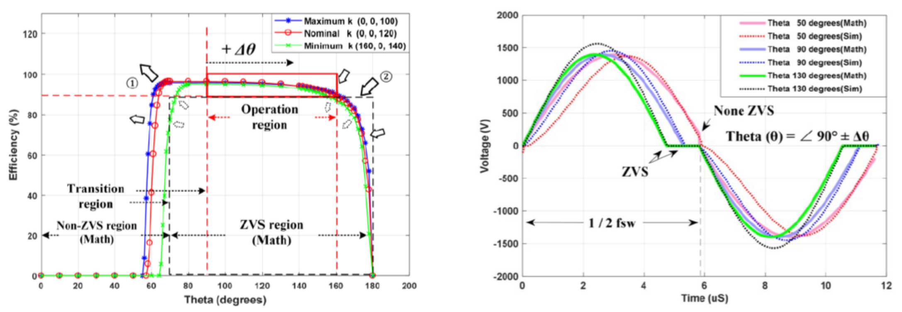
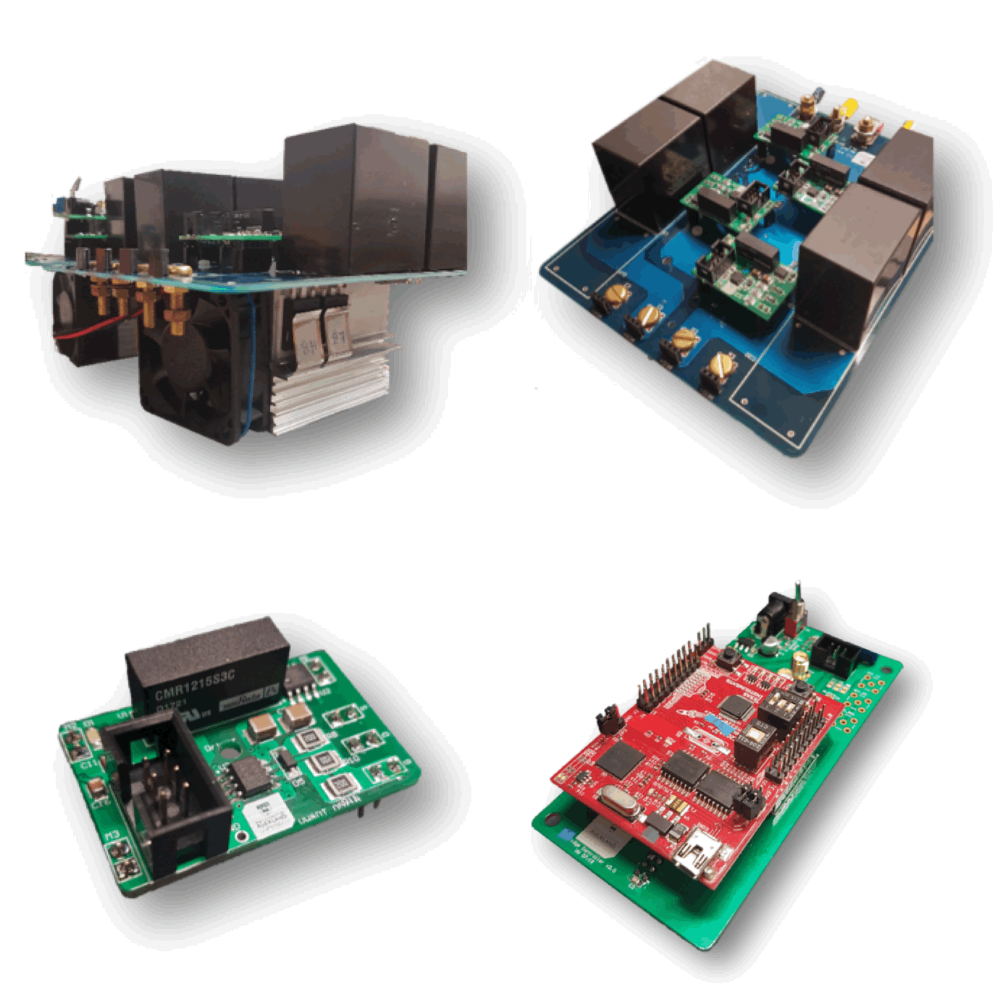

class: title-slide count: false .logo-title[] # Novel Wireless EV Charging Systems ### Recent Research Advances .TitleAuthor[Duleepa J Thrimawithana] --- layout: true name: template_slide .logo-slide[] .footer[Duleepa J Thrimawithana, Department of Electrical, Computer and Software Engineering (2019)] --- # New Zealand .center[ <video width="980" height="420" controls> <source src="Travel New Zealand in a Minute - Aerial Drone Video | Expedia.mp4" type="video/mp4"> </video> ] --- # The University of Auckland - Highest ranked New Zealand university and 85th in the QS World University Ranking - Over 5,000 staff members and 40,000 students - Nine faculties including Medical & Health Sciences, Engineering, Business & Economics and Science .center[<img src="img/UoAMap.png" height="300">] --- # Dept. of Electrical, Computer & Software Eng. .left-column[ - One of the 5 deparments in the Faculty of Engineering - Offers 3 undergraduate degree programs - Electrical & Electronics, Computer Systems and Software - Project based teaching - 35+ full-time academic staff members and 15+ post-doctoral research fellows - 150+ postgraduate students and 600+ undergraduate students - Regular visiting research scholars and research students - Research groups include Power Electronics, Power Systems, Signal Processing, Robotics, Embedded Systems, Parallel Computing, Telecommunications and Control Systems ] .right-column[ <img src="img/UoAEng.png" width="300px"> ] --- # Dept. of Electrical, Computer & Software Eng. .center[<img src="img/EngBuild.png" height="400">] --- # Power Electronics Research Group .center[<img src="img/PEGROUP.gif" height="430">] --- class: title-slide layout: false count: false .logo-title[] # Fundamental Concepts ### Modelling the Coils and Power Transfer --- layout: true name: template_slide .logo-slide[] .footer[[Duleepa J Thrimawithana](https://www.linkedin.com/in/duleepajt), Department of Electrical, Computer and Software Engineering (2019)] --- # Wireless Power Transfer - Can be divided in to two broad categories - Radiative transmission through far-field principles - Examples include power transfer through radio-frequency, microwave, optical and ultrasonic technologies - At an experimental stage of development - Start-up companies such as ubeam, energous, WI-Charge, etc. are working in this space - AirFuel Alliance is developing standards - Non-radiative transmission through near-field principles - Inductive power transfer (IPT) and capacitive power transfer (CPT) technologies are utilised - IPT is the most mature technology as it has been used in industrial applications since the 90s - A number of companies such as Daifuku, Conductix Wampfler, Apple, WitriCity, Bombardier, Wave IPT etc. are working in this space - WPC, SAE, etc. standards are being developed --- # IPT Applications - Factory automation and materials handling - Includes hoists, AGVs and clean room systems - Consumer electronics and appliances - Charging phones, laptops, etc. as well as powering appliances - Transportation electrification - Charging stationary and in-motion electric vehicles, charging electric ferries, etc. - Biomedical - Charging and powering medical devices as well as implants - Lighting and industrial applications - Provides wireless power and communication to applications such as tunnel lighting, mining, industrial machinery, robots, etc. --- # Components of an IPT System .center[<img src="img/IPTConcSys.png" height="150px">] - Primary consists of a DC-AC switched-mode converter, a compensation network and a transmitter coil(s) - A lumped transmitter coil is often referred to as a primary pad/coil/coupler - An elongated coil is often called a primary track - Can be directly fed by a DC source or through a grid-connected AC-DC converter - Secondary/pick-up consists of a receiver coil(s), a compensation network and an AC-DC converter - The reciever coil is is often referred to as a secondary/pick-up pad/coil/coupler - Primary and pick-up coils are magnetically coupled but the coupling coefficient is typically less than 40% - The compensation networks help improve efficiency by minimizing the VA requirements of converters --- # Current Status - Uni or bi-directional power flow - Primary may use a full-bridge, half-bridge, push-pull, multi-level or matrix based converter topology - Pick-up may use a boost, buck, full-bridge, half-bridge or push-pull topology - Control techniques that facilitate ZVS/ZCS over a wide range of conditions - Compensation for both sides is provided through series, parallel or a combination of series-parallel tuned networks - Power ratings up to tens of kWs - Magnetic designs include circular coil, solenoidal coil, polarised coil, multi coil structures as well as track based systems - Ferrites and/or reflection coils are often used to shape the magnetic fields generated - Transmission range of over 400 mm with over ± 200 mm XY tolerance - Efficiency typically over 85% but can be as high as 97% - Operating frequency typically ranges from tens of kHz to tens of MHz --- # Coupled Inductor Model .center[<img src="img/CpldL.png" height="135px">] - Although a T equivalent transformer model can be used to model the coils, the coupled inductor model is widely used when analysing an IPT system in the phasor-domain - In the coupled inductor model, `\(L_{pt}\)` and `\(L_{st}\)` represent the self-inductances of primary and pick-up coils - `\(V_{sr}\)` represents voltage induced across `\(L_{st}\)` due to current `\(I_{pt}\angle 0\)` flowing through `\(L_{pt}\)` and is given by \\[V\_{sr} = \omega MI\_{pt}e^{j\pi/2}\\] - Similarly, `\(V_{pr}\)` represents voltage induced across `\(L_{pt}\)` due to `\(I_{st}\angle\theta\)` and is given by \\[V\_{pr} = \omega MI\_{st}e^{j(\theta+\pi/2)}\\] --- # Open-Circuit Voltage & Short-Circuit Current .left-column[ - The voltage measured across an open-circuited pick-up coil, `\(V_{oc}\)`, is the same as `\(V_{sr}\)` and therefore \\[V\_{oc} = V\_{sr} = \omega MI\_{pt}e^{j\pi/2}\\] - The current flowing through a short-circuited pick-up coil, `\(I_{sc}\)`, is \\[I\_{sc} = \frac{V\_{sr}}{j\omega L\_{st}} = I\_{pt}\frac{M}{L\_{st}}\\] - The uncompensated volt-ampere (VA) capacity of the pick-up coil can be given by \\[S\_{u} = \left | V\_{oc} \right | \left | I\_{sc} \right | = I\_{pt}^2\frac{\omega M^2}{L\_{st}}\\] ] .right-column[.right[ <img src="img/VocIsc.png" width="310px"> ]] --- # Power Transferred Across Airgap .left-column[ - Assume that the `\(V_{sr}\)` induced by `\(I_{pt}\angle 0\)` causes a current `\(I_{st}\angle\theta\)` to flow through a load, `\(Z_{sc}\)`, attached across the pick-up coil - Under these conditions, power transferred across the airgap can be given by \\[P\_{o} = \Re \left \\{ V\_{sr}I\_{st}e^{-j(\theta)} \right \\} = \left | V\_{sr} \right | \left | I\_{st} \right | \cos(\pi/2-\theta)\\] - The VA rating of the coils required to achieve this is \\[\mathit{VA}\_{pt} = \omega L\_{pt} \left | I\_{pt} \right |^2 \quad \text{and} \quad \mathit{VA}\_{st} = \omega L\_{st} \left | I\_{st} \right |^2 \\] - Thus `\(P_{o}\)` is related to the VA in the coils as given by \\[P\_{o} = k \sqrt{\mathit{VA}\_{pt}\mathit{VA}\_{st}} \sin(\theta) \\] ] .right-column[.right[ <img src="img/GenP.png" width="310px"> ]] --- # Coil Q & Losses - Assume that the losses in `\(L_{pt}\)` and `\(L_{st}\)` are modelled using equivelent series resistances (ESRs) `\(r_{pt}\)` and `\(r_{st}\)` - The quality factors, `\(Q_{pt}\)` and `\(Q_{st}\)`, of the primary and pick-up coils are \\[Q\_{pt} = {\omega L\_{pt}}/{r\_{pt}} \quad \text{and} \quad Q\_{st} = {\omega L\_{st}} / {r\_{st}} \\] - The total losses in the two coils can be expressed as \\[P\_{loss(c)} = \left | I\_{pt}^2 \right | r\_{pt} + \left | I\_{st}^2 \right | r\_{st} = \frac{\mathit{VA}\_{pt}}{Q\_{pt}} + \frac{\mathit{VA}\_{st}}{Q\_{st}}\\] - Since `\(P_{o} = k \sqrt{\mathit{VA}_{pt}\mathit{VA}_{st}} \sin(\theta) \)`, `\(P_{loss(c)}\)` can be expressed as \\[P\_{loss(c)} = \frac{\mathit{VA}\_{pt}}{Q\_{pt}} + \frac{P\_{o}^2}{\mathit{VA}\_{pt} k^2 Q\_{st} \sin^2(\theta)}\\] --- # Maximum Coil-Coil Efficiency - Taking the derivative of `\(P_{loss(c)}\)`, conditions to achieve minimum loss can be derived as \\[ \mathit{VA}\_{pt} = \frac {P\_{o}} {k \sin(\theta)} \sqrt { \frac {Q\_{pt}} {Q\_{st}} } \quad \text{or} \quad \mathit{VA}\_{pt} = \frac {Q\_{pt}} {Q\_{st}} \mathit{VA}\_{st} \\] - Under above conditions losses in `\(L_{pt}\)` and `\(L_{st}\)` are a minimum and can be given by \\[ P\_{loss(c)\_{min}} = \frac {2 P\_{o}} {k \sin(\theta)} \frac {1} {\sqrt {Q\_{pt} Q\_{st}} } \\] - Thus, the maximum coil-coil power transfer efficiency can be derived as \\[ \eta\_{c\_{max}} = \frac{ k \sin(\theta) - \frac {1} { \sqrt {Q\_{pt} Q\_{st}} }} {k \sin(\theta) + \frac {1} {\sqrt {Q\_{pt} Q\_{st}} }} \\] --- class: title-slide layout: false count: false .logo-title[] # Research Advances ### Highlights & Updates --- layout: true name: template_slide .logo-slide[] .footer[Duleepa J Thrimawithana, Department of Electrical, Computer and Software Engineering (2019)] --- # Active Rectification of Pick-up Output .center[<img src="img/ActiveSys.png" height="180px">] - Identical primary and pick-up circuits employ inductor-capacitor-inductor (LCL) T-resonant networks - Can use other types of compensation networks - Both full-bridge converters are operated at the same frequency to drive the couplers - Compensation networks are typically tuned to the fundamental switching frequency - Magnitude of power flow is regulated using voltage cancellation to control the RMS of `\( V_{pi} \)` and `\( V_{si} \)` and/or controlling the phase difference between `\( V_{pi} \)` and `\( V_{si} \)` - Direction of power flow is controlled using the phase difference, `\( \theta \)`, between `\( V_{pi} \)` and `\( V_{si} \)` --- # Integrated Boost MMC (IB-MMC) .left-column[ - Derives a higher voltage to drive the compensation network - Reduces current stress and may eliminate step-up transformer - Inherantly eliminates circulating currents - Series-blocking capacitor can be omitted - Generate a low THD staircase modulated output voltage - Can generate wide range of voltages - Can use lower voltage higher performance devices <img src="img/IBMMC_Conv.gif" height="160px"> ] .right-column[ <img src="img/IBMMC_Vpi.gif" width="275px"> ] --- # IB-MMC Performance .left-column[ <img src="img/IBMMC_W.gif" width="700px"> ] .right-column[ - Maintains a constant 7.7 kW power transfer through primary control - Operate in 5-level mode at low k and 3-level mode at high k - Efficiency ranges between 91.5% and 92.4% across entire operating region - A simple algorithm used to ensure module voltages are balanced ] --- # Push-Pull Coupler Array (PPCA) .left-column[ .center[<img src="img/PPCA_Conv.png" height="220px">] - Each coupler driven by a single switch and controlled independently - Swtich stresses do not scale with the number of couplers - Switches only conduct the DC current - A damaged module only impacts the two neighbouring modules ] .right-column[  ] --- # Boost Active Bridge (BAB) .left-column[ - Integrated post/pre regulation capabilities enable maximum efficiency tracking - Wide ZVS range and reduced current stresses - Eliminates DC-blocking capacitor <br></br> <img src="img/BAB_Conv.png" height="200px"> ] .right-column[.right[ <img src="img/BAB_W1.png" width="310px">  ]] --- # WPT2/Z2 VA with Integrated BAB .left-column[ - Boost inductors integrated in to the DD pad - Designed to comply with WPT2/Z2 specifications - Controlled both the GA and VA to maintain a nearly constant efficiency under all operating conditions .center[<img src="img/IBAB_Conv.png" height="220px">] ] .right-column[ <img src="img/IBAB_W2.png" width="350px"> ] --- # Hybrid Compensation Topologies .left-column[ - Complementary compensation networks employed to improve misalignment tolerance - Require less or no control - Nearly constant power transfer across the entire operating region - Minimize increase in VA due to detuning caused by changes in coupler inductanes - For example the power throughput of a parallel hybrid system can be given by \\[P\_{out} = \{8V\_{in}V\_{out}\over\pi^2} \left(\frac{1}{\omega\_TM\_s} + \frac{M\_p}{\omega\_TL\_{pi}L\_{si}}\right)\\] ] .right-column[ <img src="img/Hybrid_Conv1.png" width="350px"> <img src="img/Hybrid_Conv2.png" width="350px"> ] --- # Low Cost IPT Systems .left-column[ - For example push-pull converters employed in both VA and GA - DC indcutor(s) and current splitting transformer can be integrted in with the D coupler - Generates a higher voltage to drive the couplers - Relative phase between converters controls the power flow - Switches maintain ZVS across the entire operating region .center[] ] .right-column[ .center[] .center[<img src="img/PPRC_W.png" width="230px">] ] --- # Dynamic Wireless Charging .center[ <video width="560" height="420" controls> <source src="Wireless power transfer (WPT) system at the University of Auckland.mp4" type="video/mp4"> </video> ] --- # Engineering Education .center[ <video width="720" height="420" controls> <source src="EVolocity Recruitment Video - Updated Aug 18.mp4" type="video/mp4"> </video> ] --- # Ongoing Research Work .left-column[ - Bi-directional IPT systems - Synchronisation & optimal control - Circuit topologies - Misalignment tolerant high-power IPT systems - Compensation topologies & control techniques - Modular and multi-level ciruit topologies - Grid integration of IPT systems - Circuit topologies for grid services - EMC - Dynamic charging - Circuit topologies & control techniques - Power distribution techniques - Thermal and packaging ] .right-column[  ] --- class: title-slide layout: false count: false .logo-title[] # Questions? ### Thank you